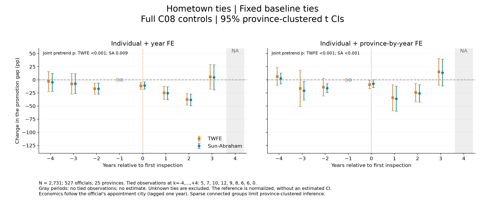
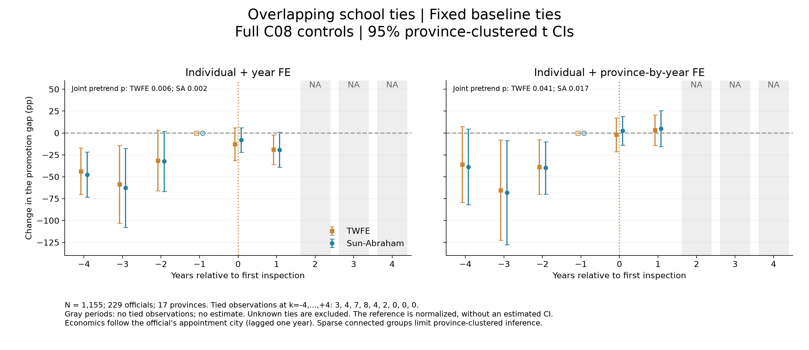

2026-10-21｜沿用首次巡视时间、k=-1参照、完整C08控制。每种关系分别估计个人＋年份FE、个人＋省份×年份FE；每组展示TWFE及Sun–Abraham。
结果概况：同乡版巡视后+1、+2期相对-1期为负，但事前联合检验也显著；同期校友版事前差异明显，事后支持更少。八个模型的三项事前交互系数联合检验均p<0.05，不能据此解释为已经通过平行趋势检验的巡视因果效应。同乡关系者12人、同期校友8人，各自仅分布于4个省。
C0在k=-1年度行固定：当时与书记或省长任一人有该类关系记1；两人均可核实无关系才记0；其余未知排除。沿用年度上年末快照：2013批次对应2011年末、2014批次对应2012年末。不是随领导更替更新分组。
同乡＝CPED籍贯省与地级市相同，不是出生地或现任地。同期校友＝既有普通在校学习口径下，同校时间重叠至少六个月，关系在2012年前且早于双方当前共同任职开始；不是仅凭同校毕业或最高学历标签。
Sun–Abraham把交互项进一步与巡视批次交互再聚合。固定C0被个人FE吸收；省份×年份FE吸收事件时间主效应。β是关系组晋升差距相对-1期的变化，不是当期绝对关系优势。两组都接受巡视，不能把无该类关系者称作未巡视组。
X＝年龄平方、任期及平方、行政级别、书记/市长身份，以及跟随官员当年任职城市的上年GDP增长、log人均GDP、log人口。线性年龄被个人＋时间FE吸收。Y保留原晋升定义。每种关系内两种FE使用相同完整样本；两种关系之间的样本不同，不强制交集。
| relation | anchor_total | anchor_connected | anchor_unconnected | anchor_unknown | N | people | connected_people | provinces | connected_provinces | singletons_removed |
|---|---|---|---|---|---|---|---|---|---|---|
| hometown_prefecture | 655 | 12 | 595 | 48 | 2731 | 527 | 12 | 25 | 4 | 15 |
| classmate_6m | 655 | 10 | 255 | 390 | 1155 | 229 | 8 | 17 | 4 | 28 |
| relation | k | N | people | provinces | connected | connected_provinces | connected_promotions | unconnected_promotions |
|---|---|---|---|---|---|---|---|---|
| hometown_prefecture | -4 | 276 | 276 | 24 | 5 | 2 | 1.0 | 17.0 |
| hometown_prefecture | -3 | 312 | 312 | 24 | 7 | 3 | 1.0 | 46.0 |
| hometown_prefecture | -2 | 416 | 416 | 24 | 10 | 3 | 0.0 | 54.0 |
| hometown_prefecture | -1 | 505 | 505 | 25 | 12 | 4 | 5.0 | 98.0 |
| hometown_prefecture | 0 | 407 | 407 | 25 | 9 | 4 | 0.0 | 58.0 |
| hometown_prefecture | 1 | 335 | 335 | 24 | 8 | 3 | 0.0 | 44.0 |
| hometown_prefecture | 2 | 269 | 269 | 23 | 6 | 2 | 0.0 | 45.0 |
| hometown_prefecture | 3 | 168 | 168 | 21 | 6 | 2 | 3.0 | 38.0 |
| hometown_prefecture | 4 | 43 | 43 | 8 | 0 | 0 | 0.0 | 7.0 |
| classmate_6m | -4 | 113 | 113 | 14 | 3 | 2 | 0.0 | 7.0 |
| classmate_6m | -3 | 134 | 134 | 14 | 4 | 3 | 0.0 | 25.0 |
| classmate_6m | -2 | 192 | 192 | 15 | 7 | 4 | 1.0 | 12.0 |
| classmate_6m | -1 | 220 | 220 | 17 | 8 | 4 | 4.0 | 45.0 |
| classmate_6m | 0 | 169 | 169 | 16 | 4 | 3 | 0.0 | 19.0 |
| classmate_6m | 1 | 141 | 141 | 14 | 2 | 1 | 0.0 | 19.0 |
| classmate_6m | 2 | 110 | 110 | 13 | 0 | 0 | 0.0 | 17.0 |
| classmate_6m | 3 | 68 | 68 | 12 | 0 | 0 | 0.0 | 16.0 |
| classmate_6m | 4 | 8 | 8 | 1 | 0 | 0 | 0.0 | 1.0 |
同期校友缺失较多，同乡关系也少。没有关系组观测的时期没有可识别的系数，图中留空；不将软件可能省略的交互项记作零效应，也不计算+1至+4平均。省聚类区间的有效信息主要来自少数有关系者所在省，常规p值须谨慎看待。


原始p值，不按显著性选择规格。没有纳入此前大量探索的调整；本轮重点是样本支持、系数和区间。
| model_id | method | test | F | df_num | p | relation | fe | absorb | N |
|---|---|---|---|---|---|---|---|---|---|
| 1 | TWFE_fixed | pretrend | 12.318544 | 3.0 | 4.461056e-05 | hometown_prefecture | I_YEAR | person_id year | 2731 |
| 1 | Sun_Abraham | pretrend | 4.823257 | 3.0 | 9.110473e-03 | hometown_prefecture | I_YEAR | person_id year | 2731 |
| 2 | TWFE_fixed | pretrend | 32.191561 | 3.0 | 1.408032e-08 | hometown_prefecture | I_PXY | person_id py | 2731 |
| 2 | Sun_Abraham | pretrend | 10.233283 | 3.0 | 1.581484e-04 | hometown_prefecture | I_PXY | person_id py | 2731 |
| 3 | TWFE_fixed | pretrend | 5.969665 | 3.0 | 6.245692e-03 | classmate_6m | I_YEAR | person_id year | 1155 |
| 3 | Sun_Abraham | pretrend | 7.671950 | 3.0 | 2.127717e-03 | classmate_6m | I_YEAR | person_id year | 1155 |
| 4 | TWFE_fixed | pretrend | 3.467581 | 3.0 | 4.115881e-02 | classmate_6m | I_PXY | person_id py | 1155 |
| 4 | Sun_Abraham | pretrend | 4.600901 | 3.0 | 1.663765e-02 | classmate_6m | I_PXY | person_id py | 1155 |
| relation | fe | method | k | b | lo | hi | p | estimable | reason |
|---|---|---|---|---|---|---|---|---|---|
| classmate_6m | I_PXY | Sun_Abraham | -4 | -38.641706 | -81.831711 | 4.548302 | 7.607587e-02 | True | NaN |
| classmate_6m | I_PXY | Sun_Abraham | -3 | -68.211571 | -127.757164 | -8.665979 | 2.732616e-02 | True | NaN |
| classmate_6m | I_PXY | Sun_Abraham | -2 | -39.841591 | -69.712280 | -9.970898 | 1.213171e-02 | True | NaN |
| classmate_6m | I_PXY | Sun_Abraham | -1 | 0.000000 | NaN | NaN | NaN | True | Normalized reference; no estimated CI |
| classmate_6m | I_PXY | Sun_Abraham | 0 | 2.635965 | -13.709940 | 18.981871 | 7.369059e-01 | True | NaN |
| classmate_6m | I_PXY | Sun_Abraham | 1 | 4.952813 | -15.675283 | 25.580908 | 6.177063e-01 | True | NaN |
| classmate_6m | I_PXY | Sun_Abraham | 2 | NaN | NaN | NaN | NaN | False | No baseline-connected observations at this event time |
| classmate_6m | I_PXY | Sun_Abraham | 3 | NaN | NaN | NaN | NaN | False | No baseline-connected observations at this event time |
| classmate_6m | I_PXY | Sun_Abraham | 4 | NaN | NaN | NaN | NaN | False | No baseline-connected observations at this event time |
| classmate_6m | I_PXY | TWFE_fixed | -4 | -35.892384 | -79.295502 | 7.510732 | 9.872599e-02 | True | NaN |
| classmate_6m | I_PXY | TWFE_fixed | -3 | -65.291862 | -122.606194 | -7.977534 | 2.806952e-02 | True | NaN |
| classmate_6m | I_PXY | TWFE_fixed | -2 | -38.766492 | -69.843033 | -7.689956 | 1.766695e-02 | True | NaN |
| classmate_6m | I_PXY | TWFE_fixed | -1 | 0.000000 | NaN | NaN | NaN | True | Normalized reference; no estimated CI |
| classmate_6m | I_PXY | TWFE_fixed | 0 | -1.917952 | -21.163761 | 17.327856 | 8.353514e-01 | True | NaN |
| classmate_6m | I_PXY | TWFE_fixed | 1 | 3.329059 | -14.048377 | 20.706493 | 6.900358e-01 | True | NaN |
| classmate_6m | I_PXY | TWFE_fixed | 2 | NaN | NaN | NaN | NaN | False | No baseline-connected observations at this event time |
| classmate_6m | I_PXY | TWFE_fixed | 3 | NaN | NaN | NaN | NaN | False | No baseline-connected observations at this event time |
| classmate_6m | I_PXY | TWFE_fixed | 4 | NaN | NaN | NaN | NaN | False | No baseline-connected observations at this event time |
| classmate_6m | I_YEAR | Sun_Abraham | -4 | -47.515330 | -73.451370 | -21.579287 | 1.318257e-03 | True | NaN |
| classmate_6m | I_YEAR | Sun_Abraham | -3 | -62.651353 | -107.786133 | -17.516571 | 9.555944e-03 | True | NaN |
| classmate_6m | I_YEAR | Sun_Abraham | -2 | -32.426074 | -66.665520 | 1.813369 | 6.187814e-02 | True | NaN |
| classmate_6m | I_YEAR | Sun_Abraham | -1 | 0.000000 | NaN | NaN | NaN | True | Normalized reference; no estimated CI |
| classmate_6m | I_YEAR | Sun_Abraham | 0 | -7.878183 | -21.867636 | 6.111269 | 2.499457e-01 | True | NaN |
| classmate_6m | I_YEAR | Sun_Abraham | 1 | -19.205980 | -39.208080 | 0.796120 | 5.870834e-02 | True | NaN |
| classmate_6m | I_YEAR | Sun_Abraham | 2 | NaN | NaN | NaN | NaN | False | No baseline-connected observations at this event time |
| classmate_6m | I_YEAR | Sun_Abraham | 3 | NaN | NaN | NaN | NaN | False | No baseline-connected observations at this event time |
| classmate_6m | I_YEAR | Sun_Abraham | 4 | NaN | NaN | NaN | NaN | False | No baseline-connected observations at this event time |
| classmate_6m | I_YEAR | TWFE_fixed | -4 | -43.729932 | -70.208450 | -17.251411 | 2.956820e-03 | True | NaN |
| classmate_6m | I_YEAR | TWFE_fixed | -3 | -58.651945 | -103.015694 | -14.288196 | 1.277105e-02 | True | NaN |
| classmate_6m | I_YEAR | TWFE_fixed | -2 | -31.537245 | -66.218674 | 3.144183 | 7.183379e-02 | True | NaN |
| classmate_6m | I_YEAR | TWFE_fixed | -1 | 0.000000 | NaN | NaN | NaN | True | Normalized reference; no estimated CI |
| classmate_6m | I_YEAR | TWFE_fixed | 0 | -12.854383 | -31.598436 | 5.889671 | 1.653362e-01 | True | NaN |
| classmate_6m | I_YEAR | TWFE_fixed | 1 | -19.078849 | -36.107128 | -2.050570 | 3.038104e-02 | True | NaN |
| classmate_6m | I_YEAR | TWFE_fixed | 2 | NaN | NaN | NaN | NaN | False | No baseline-connected observations at this event time |
| classmate_6m | I_YEAR | TWFE_fixed | 3 | NaN | NaN | NaN | NaN | False | No baseline-connected observations at this event time |
| classmate_6m | I_YEAR | TWFE_fixed | 4 | NaN | NaN | NaN | NaN | False | No baseline-connected observations at this event time |
| hometown_prefecture | I_PXY | Sun_Abraham | -4 | 2.595060 | -7.727845 | 12.917965 | 6.086234e-01 | True | NaN |
| hometown_prefecture | I_PXY | Sun_Abraham | -3 | -20.546922 | -38.332493 | -2.761351 | 2.536385e-02 | True | NaN |
| hometown_prefecture | I_PXY | Sun_Abraham | -2 | -15.731465 | -24.245520 | -7.217411 | 8.430275e-04 | True | NaN |
| hometown_prefecture | I_PXY | Sun_Abraham | -1 | 0.000000 | NaN | NaN | NaN | True | Normalized reference; no estimated CI |
| hometown_prefecture | I_PXY | Sun_Abraham | 0 | -7.266047 | -14.663668 | 0.131573 | 5.388869e-02 | True | NaN |
| hometown_prefecture | I_PXY | Sun_Abraham | 1 | -35.892202 | -59.745956 | -12.038448 | 4.823415e-03 | True | NaN |
| hometown_prefecture | I_PXY | Sun_Abraham | 2 | -25.778504 | -42.315662 | -9.241348 | 3.683460e-03 | True | NaN |
| hometown_prefecture | I_PXY | Sun_Abraham | 3 | 13.699630 | -11.907866 | 39.307125 | 2.804736e-01 | True | NaN |
| hometown_prefecture | I_PXY | Sun_Abraham | 4 | NaN | NaN | NaN | NaN | False | No baseline-connected observations at this event time |
| hometown_prefecture | I_PXY | TWFE_fixed | -4 | 6.511488 | -10.358110 | 23.381086 | 4.334687e-01 | True | NaN |
| hometown_prefecture | I_PXY | TWFE_fixed | -3 | -16.198603 | -50.846317 | 18.449112 | 3.442078e-01 | True | NaN |
| hometown_prefecture | I_PXY | TWFE_fixed | -2 | -13.773556 | -30.647705 | 3.100593 | 1.050162e-01 | True | NaN |
| hometown_prefecture | I_PXY | TWFE_fixed | -1 | 0.000000 | NaN | NaN | NaN | True | Normalized reference; no estimated CI |
| hometown_prefecture | I_PXY | TWFE_fixed | 0 | -8.943287 | -17.014982 | -0.871592 | 3.132774e-02 | True | NaN |
| hometown_prefecture | I_PXY | TWFE_fixed | 1 | -34.073506 | -58.741390 | -9.405622 | 8.819990e-03 | True | NaN |
| hometown_prefecture | I_PXY | TWFE_fixed | 2 | -24.004144 | -41.362995 | -6.645292 | 8.755193e-03 | True | NaN |
| hometown_prefecture | I_PXY | TWFE_fixed | 3 | 15.378859 | -10.036716 | 40.794434 | 2.237622e-01 | True | NaN |
| hometown_prefecture | I_PXY | TWFE_fixed | 4 | NaN | NaN | NaN | NaN | False | No baseline-connected observations at this event time |
| hometown_prefecture | I_YEAR | Sun_Abraham | -4 | -4.746604 | -21.896126 | 12.402916 | 5.731473e-01 | True | NaN |
| hometown_prefecture | I_YEAR | Sun_Abraham | -3 | -7.351594 | -26.252100 | 11.548912 | 4.299807e-01 | True | NaN |
| hometown_prefecture | I_YEAR | Sun_Abraham | -2 | -16.803640 | -27.225620 | -6.381660 | 2.814975e-03 | True | NaN |
| hometown_prefecture | I_YEAR | Sun_Abraham | -1 | 0.000000 | NaN | NaN | NaN | True | Normalized reference; no estimated CI |
| hometown_prefecture | I_YEAR | Sun_Abraham | 0 | -10.712678 | -17.432936 | -3.992421 | 3.086016e-03 | True | NaN |
| hometown_prefecture | I_YEAR | Sun_Abraham | 1 | -25.564023 | -37.854980 | -13.273065 | 2.509038e-04 | True | NaN |
| hometown_prefecture | I_YEAR | Sun_Abraham | 2 | -38.070062 | -49.082756 | -27.057367 | 2.249321e-07 | True | NaN |
| hometown_prefecture | I_YEAR | Sun_Abraham | 3 | 4.788239 | -18.915485 | 28.491962 | 6.804461e-01 | True | NaN |
| hometown_prefecture | I_YEAR | Sun_Abraham | 4 | NaN | NaN | NaN | NaN | False | No baseline-connected observations at this event time |
| hometown_prefecture | I_YEAR | TWFE_fixed | -4 | -2.973293 | -21.931211 | 15.984625 | 7.489731e-01 | True | NaN |
| hometown_prefecture | I_YEAR | TWFE_fixed | -3 | -7.507245 | -27.126017 | 12.111527 | 4.373997e-01 | True | NaN |
| hometown_prefecture | I_YEAR | TWFE_fixed | -2 | -16.731382 | -27.024111 | -6.438654 | 2.633018e-03 | True | NaN |
| hometown_prefecture | I_YEAR | TWFE_fixed | -1 | 0.000000 | NaN | NaN | NaN | True | Normalized reference; no estimated CI |
| hometown_prefecture | I_YEAR | TWFE_fixed | 0 | -11.408658 | -18.155426 | -4.661889 | 1.888429e-03 | True | NaN |
| hometown_prefecture | I_YEAR | TWFE_fixed | 1 | -24.829564 | -37.485329 | -12.173800 | 4.652762e-04 | True | NaN |
| hometown_prefecture | I_YEAR | TWFE_fixed | 2 | -37.265209 | -48.150585 | -26.379833 | 2.642695e-07 | True | NaN |
| hometown_prefecture | I_YEAR | TWFE_fixed | 3 | 5.611671 | -17.726513 | 28.949856 | 6.242222e-01 | True | NaN |
| hometown_prefecture | I_YEAR | TWFE_fixed | 4 | NaN | NaN | NaN | NaN | False | No baseline-connected observations at this event time |
限制：固定基期队列的回溯选择、早期校友边是否已形成、官员离任后的风险集，以及巡视时点的潜在内生性均保留。不能由事后不显著认定关系优势消失。